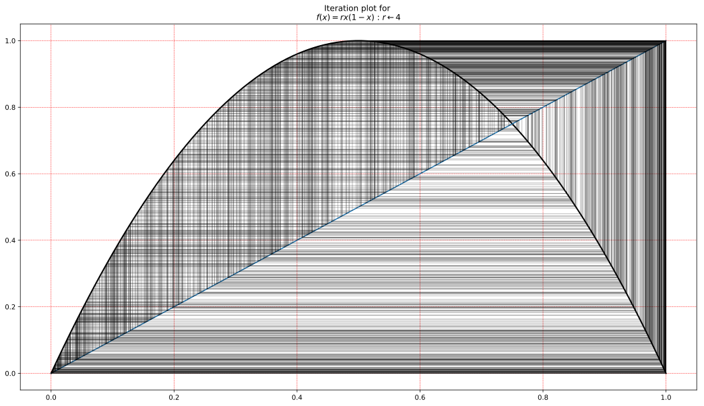
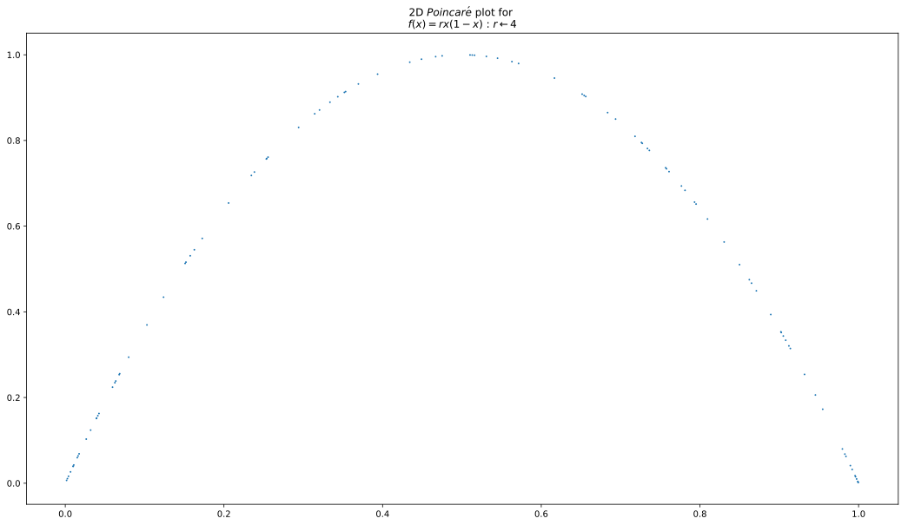
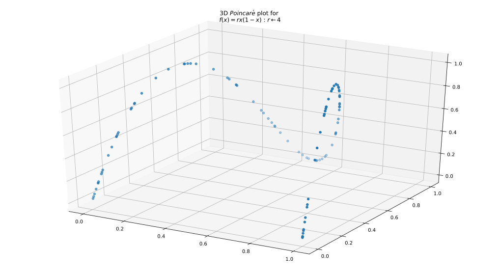

Investigations Of The Iteration Behaviour Of One Dimensional Dynamical Systems
Legal
All code on this page is released under the MIT Licence.
Introduction
This is the start of an investigation into the behaviour of one dimensional dynamical systems. I took the website https://ipython-books.github.io/121-plotting-the-bifurcation-diagram-of-a-chaotic-dynamical-system/ as the inspiration for the starting point and started adding more general capabilities
Structure
The project takes the form of a class representing a system, I used the logistic equation:
$$\begin{align} x_{n+1} = rx_{n}(1-x_n)\end{align}$$
call(x) : returns $\begin{align} x_{n+1} = rx_{n}(1-x_n)\end{align}$
diff(x) returns: $\begin{align} df/dx = r-2rx\end{align}$
$\begin{align} df/dx \end{align}$ is useful for certain analyses, such as the Lyapunov Exponent ($\lambda$), a measure of the stabiity of the system.
description() returns formatted information string about the system to be usedin matplotlib graphs etc.
Define the class logistic:
import numpy as np
import matplotlib.pyplot as plt
import numbers
from mpl_toolkits.mplot3d import Axes3D
%matplotlib inline
class logistic:
"""object representing the logistic equation {x[n+1] = r * x[n] * (1 - x[n])}
Attributes:
r ([]:`number`): the parameter r is the rate of growth in a population sometimes called the 'Malthusian Parameter'
"""
def __init__(self, r):
self.r = r
return
def __call__(self, x):
""" return f(x)
args: x : Number
"""
return self.r * x * (1-x)
def diff(self, x):
""" return df(x)/dx """
return self.r - 2 * self.r * x
def description(self):
""" return a description in matplotlib 'mathtext' """
return r'$f(x) = rx(1-x)$ : {0}'.format(self.parameter_description())
def parameter_description(self):
if isinstance(self.r, numbers.Number):
return r'$ r\leftarrow {0} $'.format(self.r)
else:
return r'$ r\leftarrow [{0},...,{1}] $'.format(self.r[0], self.r[len(self.r)-1])
def parameters(self):
return {"r":self.r}
Define a second class iterate that allows the creation of a generator to iterate the system of the set number of iterations:
class iterate:
''' iterate S=System(x) over 'iters' iterations:
x = S(x)
returns: generator
'''
def __init__(self, S):
self.S = S
def __iter__(self):
for n in range(self.max_iter):
ox = self.x
self.x = self.S(self.x)
yield (n, ox, self.x)
def __call__(self, x, max_iter):
self.x = x
self.max_iter = max_iter
return self
def system(self):
return self.S
Define a function to create an iteration plot or cobweb diagram, showing the evolution of the output from initial $x_0 \rightarrow x_n$
def iteration_plot(_it, x_range, ax):
S = _it.system()
ax.set_title("Iteration plot for \n{0}".format(S.description()))
x = np.linspace(x_range[0], x_range[1], x_range[2])
f_x = [S(_x) for _x in x]
ax.plot( x, f_x, 'k', lw=2)
ax.plot(x,x)
for _n in _it:
_x = _n[1]
_f = _n[2]
ax.plot([_x, _x], [_x,_f], 'k', lw=1, alpha=.25)
ax.plot([_x,_f], [_f,_f], 'k', lw=1, alpha=.25)
return ax
fig = plt.figure(figsize=(18,10))
gs = fig.add_gridspec(1, 1)
fig.add_subplot(gs[0,0])
ax = fig.axes
S = logistic(4)
_ = iteration_plot(iterate(S)(.1,1000), (0,1,100), ax[0]).grid(color='r', linestyle='--', linewidth=.5)

Define a function to create the bifurcation plot of S under various values of $r$. As mentioned above, the definition of $logistic$ has the side effect of allowing the parameter to be a vector so:
$logistic(x) : r \leftarrow [1,2,3,4], x_n \leftarrow 0.01$ yields $x_{n+1}=[0.0099, 0.0198, 0.0297, 0.0396]$
and:
$logistic(x) : r \leftarrow [1,2,3,4], x_n \leftarrow [0.0099, 0.0198, 0.0297, 0.0396]$ yields $x_{n+1}=[0.00980199, 0.03881592, 0.08645373, 0.15212736]$
We can specify which parameter to analyse, for multi parameter models this is useful.
def bifurcation_plot(_it, ax, parameter_name, display_iter=.9):
S = _it.system()
ax.set_title("Bifurcation Diagram for \n{0}".format(S.description()))
ax.set_xlabel("Parameter ${0}$".format(parameter_name))
ax.set_ylabel("$x_n \leftarrow f(x_{n-1})$")
max_iter = _it.max_iter
_p = S.parameters()[parameter_name]
for _i in _it:
if( _i[0] > max_iter * display_iter ):
ax.plot(_p, _i[2], ',k', alpha=.5)
return ax
fig = plt.figure(figsize=(18,10))
gs = fig.add_gridspec(1, 1)
fig.add_subplot(gs[0,0])
ax = fig.axes
_S = logistic(np.linspace(1,4,1000))
_ = bifurcation_plot(iterate(_S)(.01,1000), ax[0], "r").grid(color='r', linestyle='--', linewidth=.5)

Define a function that shows the Poincaré Plot of the system. The Poincaré Plot is made by taking an n length window across the output of system and writing the elements of that window as the co-ordinates in a state space.
The 2D state space of an iterated mapping:
$x_{n+1} \leftarrow f(x_n)$
$[x_0,x_1,...,x_n]$
2D state space of $f(x)$:
$(x_0,x_1),(x_1,x_2),...,(x_{n-1}, x_n)$
3D state space of $f(x)$:
$(x_0,x_1,x_2),(x_1,x_2,x_3),...,(x_{n-2}, x_{n-1}, x_{n})$
def poincare_plot_2d(_it, ax, display_iter=.9):
S = _it.system()
ax.set_title("2D $Poincar\\'e$ plot for \n{0}".format(S.description()))
max_iter = _it.max_iter
_,x,y = zip(*_it(.01, 100))
ax.scatter(x,y,1)
return ax
fig = plt.figure(figsize=(18,10))
gs = fig.add_gridspec(1, 1)
fig.add_subplot(gs[0,0])
ax = fig.axes
S2 = logistic(4)
_ = poincare_plot_2d(iterate(S2)(.01,1000), ax[0])

def poincare_plot_3d(_it, ax, display_iter=.9):
S = _it.system()
ax.set_title("3D $Poincar\\'e$ plot for \n{0}".format(S.description()))
max_iter = _it.max_iter
_,x,y = zip(*_it(.01, 100))
ax.scatter(x[:len(x)-1],y[:len(y)-1],y[1:])
return ax
fig = plt.figure(figsize=(18,10))
gs = fig.add_gridspec(1, 1)
fig.add_subplot(gs[0,0], projection='3d')
ax = fig.axes
S2 = logistic(4)
_ = poincare_plot_3d(iterate(S2)(.01,100), ax[0])

Define a function for estimating the Lyapunov Exponent $(\lambda)$ of the Dynamical System.
$\lambda(r) = \lim_{n \to \infty} \frac{1}{n} \sum_{i=0}^{n-1} \log\left| \frac{df_r}{dx}\left(x_i^{(r)}\right) \right|$
Define a function for creating the Lyapunov Exponent estimation for range of system parameters.
When the Lyapunov Exponent is less than zero the system with that parameter is stable, when the Lyapunov Exponent is greater than zero the system with that parameter is chaotic.
def calculate_lyapunov(_it):
S = _it.system()
lyapunov = 0
for _,xn,_ in _it:
df = S.diff(xn)
lyapunov += np.log(abs(df))
return lyapunov/_it.max_iter
def lyapunov_plot(_it, ax, parameter_name):
alpha = .5
S = _it.system()
ax.set_title("$Lyapunov Exponent (\\lambda)$ of {0}".format(S.description()))
lyapunov = calculate_lyapunov(_it)
_p = S.parameters()[parameter_name]
ax.scatter(_p[lyapunov > 0], lyapunov[lyapunov > 0], 1,'r', alpha=alpha)
ax.scatter(_p[lyapunov <= 0], lyapunov[lyapunov <= 0], 1, 'k', alpha=alpha)
mn,mx = ax.get_xlim()
ax.plot([mn,mx], [0,0], 'k')
return ax
fig = plt.figure(figsize=(8,5))
gs = fig.add_gridspec(1, 1)
fig.add_subplot(gs[0,0])
ax = fig.axes
_S = logistic(np.linspace(2.1,4,1000))
_ = lyapunov_plot(iterate(_S)(.01,100), ax[0], 'r')

fig = plt.figure(figsize=(18,10))
gs = fig.add_gridspec(2, 1)
fig.add_subplot(gs[0,0])
fig.add_subplot(gs[1,0], sharex=fig.axes[0])
ax = fig.axes
_S = logistic(np.linspace(1,4,1000))
_ = bifurcation_plot(iterate(_S)(.01,1000), ax[0], "r").grid(color='r', linestyle='--', linewidth=.5)
_ = lyapunov_plot(iterate(_S)(.01,100), ax[1], 'r').set_ylim((-5,2))

It's interesting to see the relationship between the Bifurcation diagram and the Lyapunov Exponent of the corresponding system. As noted above the Lyapunov Exponent is strongly related to the stability of the system, when the system becomes chaotic as shown on the bifurcation diagram the Lyapunov Exponent is positive. The Positive Lyapunov Exponent points are shown in red.